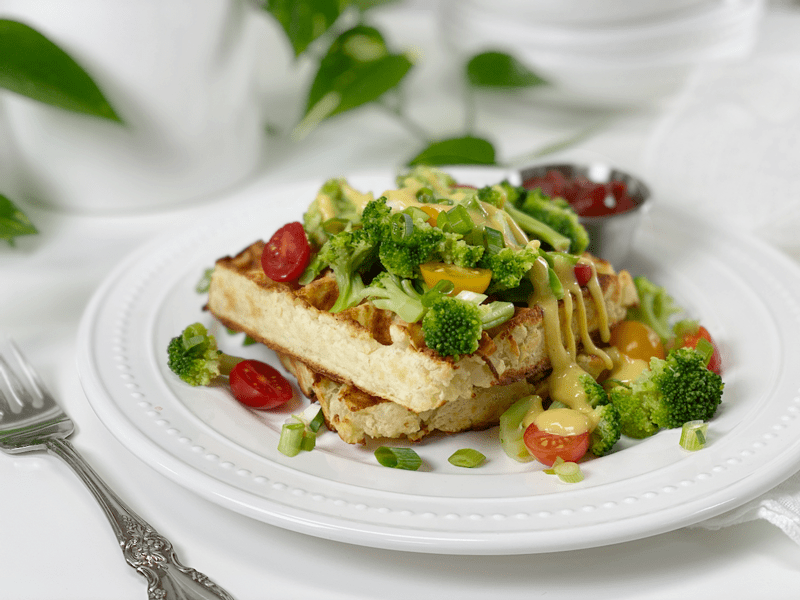

Loaded Mashed Potato Waffles | Plates of Inspiration
Today’s lunch comes to you loaded with healthy, nutritious, and delicious foods. Everything you see on my plate is vegan, gluten-free, fat-free, oil-free, nut-free, and grain-free. Starting from the bottom up: Toasted Grand Slam Potato Waffles, steamed broccoli florets, a drizzle of vegan cheese sauce, a sprinkle of sliced green onion, halved cherry tomatoes, all served with a side of ketchup.

This meal is based in starches…resistant starches, to be exact. John Hopkins Medicine states, “When starches are digested, they typically break down into glucose. Because resistant starch is not digested in the small intestine, it doesn’t raise glucose. Gut health is improved as fermentation in the large intestine makes more good bacteria and less bad bacteria in the gut. Other benefits of resistant starch include an increased feeling of fullness.”
After enjoying every last morsel, I felt satiated but light on my feet, with no bloating or tummy discomfort, and I was filled with energy to return to my duties for the day. Make every bite count! Blessings, amie sue
© AmieSue.com